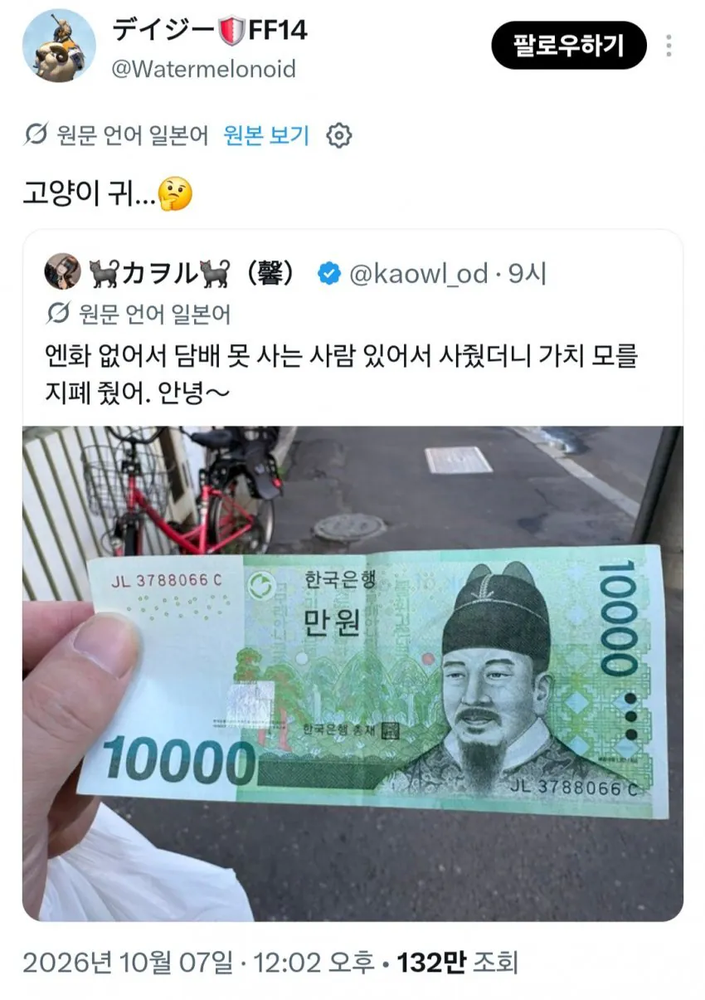
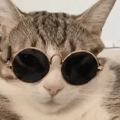

한국 만원 지폐를 본 일본인 반응
댓글
냐랏말싸미 쥐국에달아
우리나라 말이 중국이랑 다르다냥
원화의 가치를 아직 모르다니 우리나라도 아직멀었군..
엔화 똥휴지를 초강세 킹원화로 바꿔줬는데도 못알아보는 저녀석이 문제다
원화네코
2배 쳐줬네
외국도 5천원ㅇ0 한갑꼴임?
저번 글에 댓글보니까 일본담배가 거의 6600 6700한다던데
일본하고 비슷할껄?
근데 담배는 사실 대부분이 세금이라 나라마다 다르긴 함
550엔에서 600엔 정도함
올해 초에 일본가서 말보로 골드 펴봤는데 7000원쯤이였고 맛은 뭐 별차이없었음
그렇게보니까 또 저 모자 좀 커엽네
나랏말싸미 듕귁에 달아았다냐~
만냥
냥종대왕
씨발ㅋㅋㅋㅋ 네코미미
전하...
냥?
익선관이 생긴게 오모시로이하긴해 ㅋㅋㅋ
세종네코다냐
인사해라
지금 쓰고있는 한글 만드신 분이다
번역임
일본어 쓰는 사람인데
고양이귀를 달고.. 말이 ~냐로 끝나는 민족..
반갑냐
환율 따지면 2배 준거네 ㅋㅋㅋ
어서오시오 젊은이여
일본인들은 원화가 얼마인지조차 모를정도로 한국에 관심이없군
~~했냐? , 만냥, 네코미미모자
화폐 단위가 냥인 이유가 있었네
만원이다냥

안그래도 닥터슬럼프 아라레 남친 보면 생각났음
믜야아옹~
화폐단위도 원래 냥 이였다냥
bird bell wise
세종이다옹